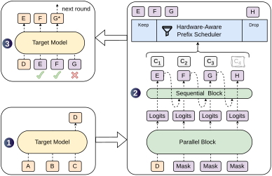
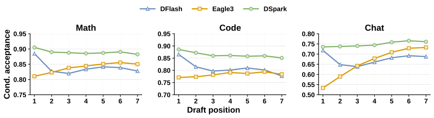
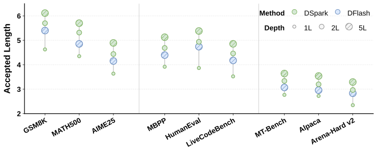
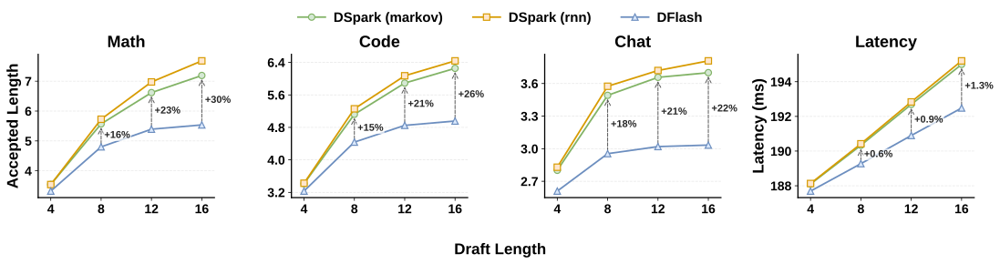
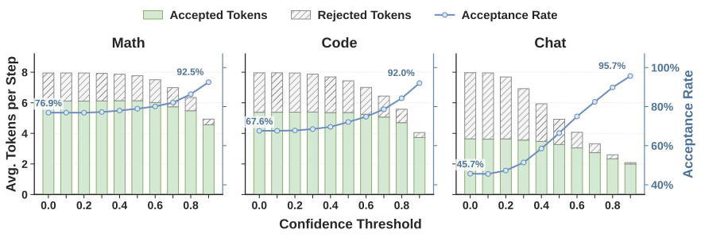
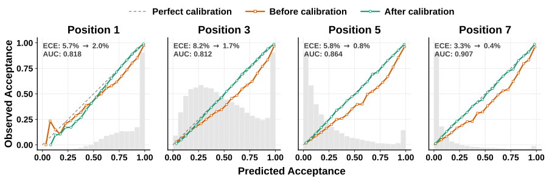
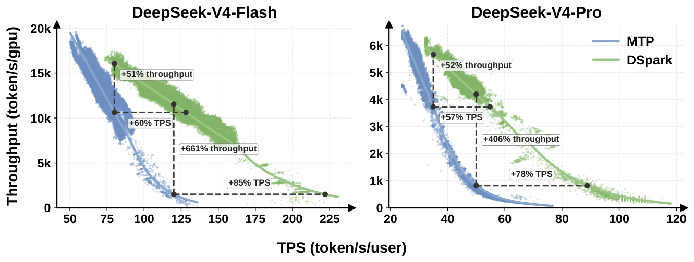
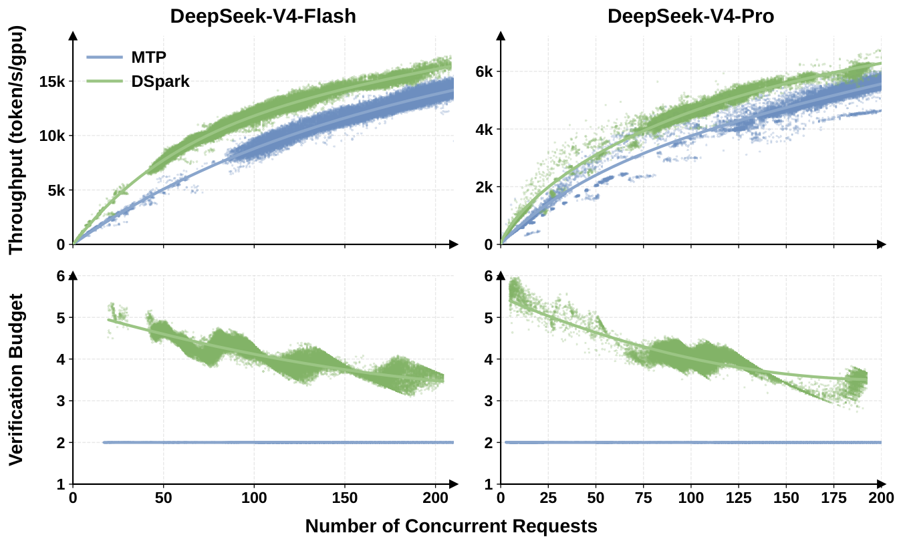

DSpark：半自回归起草，按置信度和负载安排验证长度的投机解码
DSpark: Confidence-Scheduled Speculative Decoding with Semi-Autoregressive Generation
GitHub star 为 2026-10-20 的快照。阅读状态、进度与收藏只保存在你的浏览器里。
逐节精读
这部分按论文的章节顺序，用本站自己的话把整篇论文从头讲一遍。读懂某个概念需要的背景知识，会在第一次用到它之前单独讲清楚（青色框）。每个结论都尽量说出“因为什么、所以什么”。论文以 CC BY 4.0 发布，原图放在讲到它的地方并说明怎么看；原图没画到的机制，用本站的示意图补上。标“推算”的数字是本站根据论文数据算出来的，不是论文原话。每节末尾有英文原文的链接。
0 导读：这篇论文解决什么问题
大语言模型生成文字时一次只能产出一个 token，每产出一个都要把整个模型完整地算一遍。投机解码是目前最常用的提速办法：先让一个很小的草稿模型（drafter）一口气猜出后面几个 token，再让大模型（称为目标模型）用一次前向把这几个猜测同时检查一遍，猜对的直接收下。因为检查规则经过专门设计，最终输出的分布和大模型自己一个一个生成时完全相同，所以这种加速是无损的。在 DSpark 之前，DeepSeek 的线上服务用的是最保守的配置 MTP-1：用 DeepSeek-V3 引入的多 token 预测模块当草稿器，每轮只猜 1 个 token。
每轮只猜 1 个，显然没有把投机解码的潜力用足。这篇论文认为，想让草稿器每轮猜得更长、并且这些猜测真的变成加速，要同时跨过两道坎。第一道在草稿质量上：近两年流行的“并行草稿器”能用一次前向猜出一长串，但串里的每个位置是各猜各的，互相看不见，于是越往后越容易前后不搭，被拒绝的概率越来越高。第二道在系统代价上：线上同时服务着很多请求，目标模型每次验证能处理的 token 数是有限的；验证一个最终被拒的 token，等于白白占掉了本可以服务别的请求的位置。负载越重，这种浪费越伤吞吐。DeepSeek 线上之所以长期只用 MTP-1，原因就在这里。
DSpark 用两个配套的设计分别对付这两道坎。在草稿端，它用半自回归结构：沉重的主干仍然一次前向并行算完整个块，只在最后加一个极轻的“顺序头”（默认是一个 Markov 头），让每个位置能看到前一个已经采样出的 token，从而缓解越往后越不准的问题。在验证端，它用按置信度调度的验证：一个置信度头估计草稿里每个位置“能活过验证”的概率，一个调度器再结合推理引擎实测的吞吐曲线，为每个请求决定这一轮验证前几个，负载轻时多验，负载重时少验，而且调度规则经过设计，不破坏无损性。
论文报告的结果分两部分。离线基准上，在 Qwen3-4B/8B/14B 三个目标模型、采样温度 1.0、链式草稿的设置下，DSpark 的平均接受长度比自回归草稿器 EAGLE-3 高 27%–31%，比并行草稿器 DFlash 高 16%–18%。线上部署在 DeepSeek-V4 的服务系统里，面对真实用户流量，与原先的 MTP-1 相比，在相同的整机吞吐下，每个用户看到的生成速度快了 60%–85%（V4-Flash）和 57%–78%（V4-Pro）。论文发布前后，DSpark 被 vLLM 和 SGLang 先后合入，后来又成为 DeepSeek-V4.1-Flash 的投机解码模块（见“后来怎么样了”）。
读完这部分，你应该能回答这几个问题：
- 投机解码的每 token 延迟由哪三项决定？自回归草稿器和并行草稿器分别在哪一项上吃亏？
- 为什么并行草稿器越往后越不准？“多峰撞车”是什么意思？一个只看前一个 token 的 Markov 头为什么就能大幅缓解它？
- 置信度头预测的到底是什么概率？为什么调度器需要的是“校准过”的概率，而不只是能排对顺序的分数？
- 调度器怎么把“验证几个”写成一个吞吐最大化问题？为什么贪心就够了？为什么必须“提前停止”才能保持无损？
- 为什么同样多验证一个 token，负载轻时几乎免费，负载重时却会拖垮吞吐？
- “相同吞吐下快 60%–85%”和“吞吐高 661%”分别是在什么条件下读出来的？哪些信息论文没有公开？
1 引言：并行草稿器能猜得很长，为什么收益还是上不去
语言模型按“接龙”的方式生成：第 \(n\) 个 token 必须等前 \(n-1\) 个都确定之后才能算。每生成一个 token 都要把整个模型的参数从显存读一遍，而这一步里真正的计算量很小，所以 GPU 的算力大部分时间在等数据，没有用满（详见 vLLM 精读 §1）。
投机解码利用的正是这些闲着的算力：目标模型一次前向处理 1 个位置和处理 5 个位置，耗时差不多，因为两种情况下参数都只读一遍。于是先让草稿器猜出 \(\gamma\) 个 token，再让目标模型一次前向同时算出这 \(\gamma\) 个位置上自己的分布，逐个比对、按规则决定收下几个。只要平均每轮能收下不止一个 token，生成就变快了。收下的规则保证最终输出与目标模型单独生成时同分布，推导见 投机解码精读 §2.3。
草稿器的设计决定了“猜得快”和“猜得准”之间怎么取舍。早期的草稿器是自回归的，比如 EAGLE 系列和 Apple 的 ReDrafter：它也一个一个地猜，第 \(k\) 个位置的猜测以前面已经猜出的 token 为条件。这样猜得准，但起草时间随块长 \(\gamma\) 线性增长，所以这类方法只能用很短的块和很浅的网络（EAGLE-3 的草稿头只有 1 层）。为了打破这个串行瓶颈，并行草稿器出现了，比如 Medusa、DART 和 DFlash：它们一次前向同时给出块里所有位置的预测，起草时间几乎不随 \(\gamma\) 变化，因此理论上可以高效地猜出长得多的块。
可是要把长块的潜力真正用起来，还卡在两处。第一处在生成质量：并行草稿器各位置独立预测，模型无法表达“这个位置猜了什么、下个位置就该接什么”这种块内依赖，于是不同候选说法的碎片会被拼在一起（论文称为多峰碰撞，multi-modal collision），越靠后的位置被接受的概率掉得越快（suffix decay，后缀衰减）。第二处在系统效率：并行草稿器很容易一口气猜出很长的块，但不加区分地把整块都送去验证，会拖低系统吞吐，并发越高越明显。
论文进一步指出，“该验证几个”这个最优值沿两个方向变化。一个方向是数据：代码这类结构化文本好猜，接受率天然高；开放式聊天难猜，接受率低。另一个方向是系统负载：负载轻时多验证几个 token 几乎不花额外时间；负载重时，每个大概率会被拒的 token 都占着目标模型一次前向里宝贵的批容量，而这些位置本可以拿去服务其他正在等待的请求。所以，一个固定的验证长度不可能在所有数据和所有负载下都合适。
DSpark 的两个机制正好一一对应这两处障碍。
- 半自回归生成：计算量大的草稿主干保持完全并行，只在输出端加一个轻量的串行头，把“前一个 token 是什么”这样的局部转移信息注入进来。这样起草速度基本保持并行草稿器的水平，后缀衰减却明显减轻。
- 按置信度调度的验证：一个置信度头估计每个位置的“前缀存活概率”，一个感知硬件的调度器再根据引擎实时的吞吐特性，为每个请求量身决定验证长度，把目标模型的验证预算只花在期望收益最高的 token 上。
论文的评测也分两层：离线基准上比草稿质量（数学、代码、日常对话三个领域），线上部署在 DeepSeek-V4 的服务系统里比真实流量下的吞吐与每用户速度。具体数字在第 4、5 节细读。作者还开源了为 DeepSeek-V4-Flash（preview）和 V4-Pro（preview）训练的 DSpark 权重，以及一个叫 DeepSpec 的训练与评测代码库，里面包含 EAGLE-3、DFlash 和 DSpark 三种草稿器。
2 背景：每 token 延迟的三根杠杆，和两类草稿器
2.1 一轮投机解码在做什么，延迟由哪三项决定
记目标模型为 \(M_{t}\)，草稿模型为 \(M_{d}\)。每一轮，草稿模型先提出 \(\gamma\) 个候选 token \(x_{1},\dots,x_{\gamma}\)；目标模型用一次前向，在这 \(\gamma\) 个位置上分别算出自己的分布 \(p^{t}_{k}\)，再和草稿分布 \(p^{d}_{k}\) 比对。第 \(k\) 个候选以概率 \(\min\big(1,\,p^{t}_{k}(x_{k})/p^{d}_{k}(x_{k})\big)\) 被接受。验证从左往右进行，第一个被拒的位置之后的所有候选，不管猜得多好，一律作废。
上面的接受规则来自 Leviathan 等人和 Chen 等人 2023 年的两篇论文。直观地说：如果草稿给某个 token 的概率比目标模型给的还低（\(p^{d}\le p^{t}\)），那它一定被接受；如果草稿“过度自信”，给得比目标模型高，就按比例 \(p^{t}/p^{d}\) 接受。一旦某个位置被拒，目标模型就从“残差分布” \(\max(0,\,p^{t}-p^{d})\)（归一化后）里重新采样一个 token 补上，这一轮结束。如果所有候选都被接受，目标模型在最后一个位置本来就顺手算出了下一个 token 的分布，可以再免费采样一个，这个 token 叫奖励 token（bonus token）。可以证明，这样得到的每一个 token 都恰好服从目标模型的分布。
这里有一个后面会反复用到的量：某个位置上草稿被接受的平均概率等于两个分布逐点取小再求和，\(\sum_{x}\min\big(p^{t}(x),p^{d}(x)\big)=1-\tfrac{1}{2}\lVert p^{d}-p^{t}\rVert_{1}\)，也就是 1 减去两个分布的总变差距离。两个分布重叠得越多，接受率越高（图解见 投机解码精读 §3.2）。
设每轮被接受的 token 数为 \(\tau\)，起草和验证的耗时分别是 \(T_{\text{draft}}\) 和 \(T_{\text{verify}}\)，那么平均每生成一个 token 的延迟是：
所以要提速只有三根杠杆：把 \(T_{\text{draft}}\) 压低（起草更快）、把 \(\tau\) 提高（起草更准）、把有效的 \(T_{\text{verify}}\) 降下来（验证更聪明）。DSpark 的半自回归结构同时照顾前两根，置信度调度对付第三根。
举一个推算的例子帮助建立量级感：假设目标模型一次前向耗时记为 1，起草耗时 0.1，验证一个 6 token 的块比普通一步多花 5%，即 1.05；如果平均每轮接受 \(\tau=4\) 个 token，那么每 token 延迟是 \((0.1+1.05)/4\approx0.29\)，大约是不用投机解码时的 3.5 倍速（推算，数字为示意）。注意这里的 \(\tau\) 和本文所有表格一样，包含奖励 token：一轮里草稿一个都没猜对时，\(\tau=1\)。
下面的交互演示可以自己调：\(\alpha\) 是每个位置的接受率，\(c\) 是起草一步与目标模型一步的耗时比，左图给出每轮期望产出和加速比随 \(\gamma\) 怎么变，右图演示拒绝采样为什么能精确还原目标分布。这个演示用的是“每个位置接受率相同、彼此独立”的经典假设；DSpark 关心的恰恰是这个假设不成立的情形：位置越靠后接受率越低（并行草稿器），或者各请求的接受率差别很大（不同领域）。
2.2 草稿器（一）：自回归的猜得准，但起草时间随块长线性增长
自回归草稿器一个接一个地生成草稿，每个位置都以前面已经采样出的草稿 token 为条件，代表是 EAGLE 系列、ReDrafter，以及 DeepSeek-V3 的多 token 预测（MTP）模块。这种显式的依赖让它们建模能力强，可代价是 \(T_{\text{draft}}\propto\gamma\)：猜 7 个就要跑 7 次草稿网络。为了让起草时间不至于吃掉收益，这类方法只能用小的 \(\gamma\) 和很浅的网络。
EAGLE 系列的草稿头只有一层 Transformer，它不从 token 出发，而是从目标模型的隐藏特征出发往后推；EAGLE-3 进一步融合目标模型低、中、高三层的特征，并在训练时就让草稿头“吃自己的输出”连续猜好几步（称为 training-time test，TTT），减轻训练和推理时的输入不一致（详见 EAGLE 精读·后来怎么样了）。MTP 是 DeepSeek-V3 在预训练时就和主模型一起训练的一个额外模块，用来预测下一个之后的那个 token；推理时把它当草稿器，每轮多猜 1 个，第二个 token 的接受率在 85%–90%（见 DeepSeek-V3 精读 §2.2）。
为了弥补块短的问题，很多自回归方法采用树验证：每个位置不只留一个候选，而是留几个，展开成一棵候选树，再用一种特殊的注意力掩码（树注意力）让目标模型一次前向验证所有路径，最后选接受得最长的那条（见 Medusa 精读 §2.2）。树能提高 \(\tau\)，但要验证的 token 数成倍增加。只服务一个请求时这些位置几乎免费；线上高并发时，它们会实实在在地挤占批容量，拖低整体吞吐。与之相对的链验证每轮只验证一条候选序列。DSpark 的所有实验都用链式起草与验证。
2.2 草稿器（二）：并行的 DFlash 一次前向填满一个块
并行草稿器一次前向就产出全部 \(\gamma\) 个草稿 token，所以 \(T_{\text{draft}}\) 几乎与块长无关，可以用大得多的块（例如 \(\gamma=16\)）而不按比例增加延迟。DSpark 的并行部分直接采用 DFlash，所以先把 DFlash 的做法讲清楚（完整讲解见 DFlash 精读 §4）。
从目标模型借特征。DFlash 在预填充（处理用户输入）时，从目标模型选定的 \(m\) 层 \(\{l_{1},\dots,l_{m}\}\) 取出隐藏状态，拼接后用一个共享的投影矩阵 \(W_{c}\in\mathbb{R}^{d\times md}\) 投到草稿模型的隐藏维度 \(d\)，再做 RMSNorm，得到上下文特征 \(H_{\text{ctx}}\)：
KV 注入。这些上下文特征被注入草稿模型的每一层：在第 \(i\) 层算注意力时，把由 \(H_{\text{ctx}}\) 投影出的 key、value 和草稿块自身表示 \(H_{d}\) 投影出的 key、value 沿序列维度拼在一起。
这样草稿块里的每个位置都能直接“看见”目标模型对上下文的理解，而块内各位置之间是双向注意力，互相都能看到。
一次前向填满一个块。草稿模型和目标模型共用嵌入层和输出头（都冻结不训）。它的输入是一个锚点 token（上一轮目标模型最后生成的那个 token，也就是奖励 token）的嵌入，后面跟 \(\gamma\) 个“掩码”占位符的嵌入；一次前向之后，所有掩码位置同时给出 logits。由于无论块多长都只需一次前向，在相同的延迟预算下，DFlash 可以比自回归草稿器用更深的网络（实验里是 5 层）和更大的块。
3–3.1 结构总览与半自回归生成：并行主干加一个轻量顺序头
先看整体。DSpark 由两个互补的部件组成：半自回归生成（§3.1）用并行主干承担起草的大部分计算，使 \(T_{\text{draft}}\) 基本不随 \(\gamma\) 增长，再用一个轻量的顺序模块在草稿 token 之间注入依赖，以很小的额外延迟提高 \(\tau\)；按置信度调度的验证（§3.2）用一个置信度头估计每个位置的接受概率，再由一个感知硬件的调度器据此剪掉低置信度的尾部 token，省下不必要的验证计算。原文图 1 把一轮完整的解码画在了一起：

3.1（一）并行起草为什么会“撞车”
机器翻译领域在 2018 年就研究过“一次生成整句”的非自回归 Transformer（NAT，Gu 等人）。它们碰到的核心困难是：同一个输入往往对应好几种都正确的输出（分布有多个“峰”）。如果模型的每个位置各自独立地预测，每个位置学到的只能是“所有正确答案在这个位置上的混合”，采样时就可能从不同的正确答案里各取一段拼起来，拼出一句哪个答案都不是的话。这被称为多峰问题或多峰碰撞。
并行草稿器面对的是同一个问题。它在一次前向里给出全部 \(\gamma\) 个位置的 logits，所以每个位置的预测都没法以块里其他位置实际采样出的 token 为条件。论文举的例子是：上下文之后既可以接“of course”，也可以接“no problem”。并行草稿器的第二个位置不知道第一个位置最后采到的是“of”还是“no”，只能对两种可能取平均，结果就可能拼出“of problem”或“no course”。一旦拼错，从这个位置起后面的草稿全部作废，所以接受率沿着块迅速衰减，起草和验证的计算都白费了。
位置 2：course 0.5 ／ problem 0.5
3.1（二）两段式起草：并行阶段与顺序阶段
DSpark 因此把起草拆成两段。
并行阶段。一个并行主干（论文的实例就是 DFlash）对整个块做一次前向，得到每个位置的隐藏状态 \(h_{1},\dots,h_{\gamma}\) 和基础 logits \(U_{1},\dots,U_{\gamma}\)。论文对 DFlash 只做了一处小改动：原版 DFlash 输入“锚点 + \(\gamma\) 个掩码”，只在掩码位置上预测；DSpark 把锚点自己的位置也当成第一个预测位置（就像普通语言模型在每个位置预测下一个 token 那样），于是输入“锚点 + \(\gamma-1\) 个掩码”共 \(\gamma\) 个 token，输出 \(\gamma\) 个草稿 logits。论文称这样起草计算更少，草稿质量相近。
顺序阶段。顺序阶段在基础 logits 上加一个依赖前缀的转移偏置（论文记作 \(B_{k}\)；为了不和后面的批大小 \(B\) 混淆，本页记作 \(b_{k}\)），让每个草稿位置都能以块内已经采样出的 token 为条件。整个块的分布写成自回归的连乘：
这里 \(x_{0}\) 是上一轮留下的锚点 token，\(U_{k}\) 是并行主干在第 \(k\) 个位置给出的基础 logits 向量，\(\mathcal{V}\) 是词表。推理时，顺序块按 \(p_{k}(\cdot\mid x_{0},x_{<k})\) 从左往右逐个采样。
这个写法有两个要点。第一，每个位置的分布是一个普通的 softmax，所以草稿给每个 token 的概率 \(p^{d}_{k}(x_{k})\) 可以精确算出来，而拒绝采样恰恰需要这个数（接受概率是 \(p^{t}/p^{d}\)）。论文在相关工作里特意对比：CRF 一类的结构化输出层要做全局归一化，CTC 草稿器要对对齐路径求和，它们都拿不到精确的逐 token 概率，后者因此只能做贪心验证。DSpark 把顺序修正限制成局部的偏置，绕开了这个麻烦。第二，因为采样是串行的，顺序块必须非常轻，满足 \(T_{\text{sequential}}\ll T_{\text{parallel}}\)，整个起草时间才仍由并行阶段主导。
3.1（三）顺序头的两种实现：Markov 头与 RNN 头
Markov 头（默认）。最简单的做法是让偏置只依赖紧挨着的前一个 token，也就是一阶转移 \(b(x_{k-1},x_{k})\)。原则上这是一张 \(V\times V\) 的大表 \(W\)：对 Qwen3 约 15 万的词表，这张表有约 \(2.3\times10^{10}\) 个数（推算），根本放不下。论文用低秩分解 \(W=W_{1}W_{2}\) 近似它，\(W_{1}\in\mathbb{R}^{V\times r}\)，\(W_{2}\in\mathbb{R}^{r\times V}\)。给定前一个 token \(x_{k-1}\)，第 \(k\) 个位置的偏置是：
其中 \(W_{1}\) 相当于一张嵌入查找表（取出 \(x_{k-1}\) 那一行，一个 \(r\) 维向量），\(W_{2}\) 相当于把这个向量投影成整个词表上的 logits。默认秩 \(r=256\)。按 Qwen3 的词表 151,936 算，\(W_{1}\)、\(W_{2}\) 合计约 7,800 万个参数；每采样一个位置，主要计算是一次 \(256\times151{,}936\) 的矩阵—向量乘，约 3,900 万次乘加，大约是一次输出头投影（隐藏维度 2,560 时约 3.9 亿次乘加）的十分之一（以上均为推算）。回到前面的例子：第 1 个位置采出“of”之后，Markov 头会抬高第 2 个位置上“course”的分数、压低“problem”的分数，撞车就被化解了。官方代码里第 1 个位置的“前一个 token”就是锚点，所以第 1 个位置也带有这个修正。
RNN 头。Markov 头只记得一步：第 \(k\) 个位置看不到 \(x_{k-1}\) 之前的 token。RNN 头放宽了这一点，它维护一个循环状态 \(s_{k}\)，把块内完整的前缀历史累积起来。每一步把当前状态 \(s_{k-1}\in\mathbb{R}^{r}\)、前一个 token 的嵌入 \(W_{1}[x_{k-1}]\in\mathbb{R}^{r}\) 和主干隐藏状态 \(h_{k}\in\mathbb{R}^{d}\) 拼成 \(z_{k}=[s_{k-1};\,W_{1}[x_{k-1}];\,h_{k}]\in\mathbb{R}^{2r+d}\)，再做一次带门控的更新：
\(W_{g},W_{c},W_{o}\in\mathbb{R}^{r\times(2r+d)}\) 由同一个线性投影切成门控、候选、输出三份，初始状态 \(s_{0}=0\)。门控 \(\sigma(W_{g}z_{k})\) 决定旧状态保留多少、新信息写入多少，这和 GRU 的思路一样。
- “半自回归”在不同文献里意思不同。在块扩散语言模型里，它常指“块与块之间自回归、块内并行”；在 DSpark 里，它指“主干并行、输出端加一个轻量的串行修正”。两者都是在并行与串行之间折中，但折中的位置不同。
- Markov 头只是在 logits 上加偏置，它无法改变并行主干的隐藏状态。主干在第 \(k\) 个位置“理解”到的上下文仍然不包含块内实际采样出的 token；顺序头修的只是输出分布。§4.3.2 的实验显示这个看似很弱的修正效果相当大。
3.2–3.2.1 按置信度调度验证：置信度头与校准
论文把问题归结为两个相互作用的因素。数据方面，不同领域的接受率天然不同：代码这类结构化文本接受率高，开放式聊天低得多。系统方面，多验证一个 token 的实际代价完全取决于引擎的负载：负载轻时，就算被拒，多验证一个也几乎没有损失；高并发时，每一个不必要的验证都占着目标模型的批容量，而这些容量本可以服务别的活跃请求。因此需要一个统一的机制，把目标模型的计算只分配给期望收益为正的 token。DSpark 的做法是把一个预测前缀存活概率的置信度头（§3.2.1）和一个根据当前负载动态决定最优验证长度的硬件感知前缀调度器（§3.2.2）配合起来。
线上的推理引擎在每一步把所有活跃请求凑成一个批，一起做一次前向。用了投机解码之后，每个请求在这一步要送进目标模型的不是 1 个 token，而是“1 + 验证长度”个 token，整步的 token 总数就是论文说的批大小 \(B\)（以 token 计）。
一次前向的耗时由两个上限中较慢的一个决定：从显存读参数（和 KV 缓存）的时间，以及做乘加运算的时间。\(B\) 小的时候，读参数的时间占主导，计算单元大量闲置，这时多塞几个 token 几乎不增加耗时，相当于有“免费的 token 槽”（TiDAR 精读 §1.1 专门讲过这个现象）。\(B\) 大到一定程度之后，计算成为瓶颈，耗时开始随 \(B\) 成比例增长，这时每多验证一个 token，就要实打实地多花一份计算，而被拒的 token 什么也换不回来。下面的屋顶线演示可以自己试：把批大小从几十调到几千，看工作点什么时候从左边的“带宽受限区”跨进右边的“算力受限区”。
所以同一个“多验证 1 个 token”，在负载轻时近乎白送，在负载重时却在和别的请求抢算力。DFlash 精读 §7.2 用 DFlash 的实测吞吐展示过这一点：并发从 1 升到 32，DFlash 的加速比明显缩水。
3.2.1 置信度头：预测“前面都通过时，这一个也能通过”的概率
受 SpecDec++（Huang 等人，2024）等工作的启发，DSpark 给每个草稿位置 \(k\) 输出一个标量 \(c_{k}\in(0,1)\)。关键在于它建模的是一个条件概率：在块里前面所有草稿 token 都已经通过验证的前提下，第 \(k\) 个位置的草稿 token 也能通过的概率。结构只是一个线性投影加 sigmoid：
\(h_{k}\) 是并行主干在第 \(k\) 个位置的隐藏状态，\(W_{1}[x_{k-1}]\) 是前一个草稿 token 在 Markov 头里的嵌入。注意输入里没有 \(x_{k}\) 本身：置信度是在第 \(k\) 个 token 被采出来之前就能算的，它回答的是“不管这个位置最后采到什么，平均有多大机会通过”。这一点在后面讨论无损性时很关键。
拿什么当标签。训练时不用“这个 token 实际有没有被接受”这种 0/1 的结果，而是用解析算出的接受率当软标签。由 §2.1 的背景知识，第 \(k\) 个位置的期望接受率等于 1 减去草稿分布和目标分布的总变差距离：
用软标签有两个好处：它没有抽样噪声（0/1 标签要很多样本才能平均出这个数），而且训练时每个位置都能直接算出来，不必真的跑一遍验证。
\(c_{k}\) 要的是“前面都通过”这个条件下的概率。训练时，块里前面位置的 token 来自目标模型自己生成的回答（训练数据的回答是用目标模型重新生成的，见 §4.1），相当于按目标分布 \(p^{t}\) 抽出的前缀。推理时，一个草稿 token 在“被接受”这个条件下服从的是两分布重叠部分归一化后的分布 \(\min(p^{t},p^{d})/\sum_{x}\min(p^{t},p^{d})\)，并不严格等于 \(p^{t}\)；只有草稿与目标很接近时，两者才几乎相同。另外 Markov 头和置信度头在推理时读到的“前一个 token”是草稿自己采出来的，而训练时读到的是目标模型写出的 token。论文没有讨论这种错位；后来的 DSpark-OPD（见“后来怎么样了”）把它当作要修的问题之一，用在线策略的方式在草稿自己诱导出的前缀上继续训练。
3.2.1（续）事后校准：顺序温度缩放（STS）
评价一个概率预测器有两个互相独立的方面。区分能力指它能不能把“会通过的”和“不会通过的”排对顺序，常用 ROC 曲线下面积（AUC）衡量：AUC = 0.5 等于瞎猜，1.0 是完美排序。校准指它说 70% 的那些情况，是不是真的大约 70% 会发生。一个模型可以排序很准却系统性地“过度自信”，例如说 90% 的情况实际只有 80% 发生。
画可靠性图的办法是：把所有预测按预测概率分成若干个桶，横轴是桶里的平均预测概率，纵轴是桶里实际发生的比例；完美校准时点都落在对角线上，曲线在对角线下方就说明过度自信。期望校准误差（ECE）把各个桶的偏差按样本数加权平均：\(\mathrm{ECE}=\sum_{b}\tfrac{n_{b}}{N}\,\lvert \mathrm{acc}_{b}-\mathrm{conf}_{b}\rvert\)。温度缩放是最常用的校准手段：把 sigmoid 之前的分数除以一个温度 \(T\) 再过 sigmoid，\(T>1\) 让预测变得不那么极端。它是单调变换，不改变任何两个预测的先后顺序，所以 AUC 不变，只改绝对数值。
为什么 DSpark 非校准不可。以往按置信度截断草稿的方法（SpecDec++、EAGLE-2 等）用的是一个固定门槛，它们只需要置信度能把 token 的好坏排对顺序。DSpark 的调度器则要用置信度的绝对数值去算期望接受长度 \(\tau\)，再拿它和吞吐的变化比较（§3.2.2）。神经网络给出的置信度往往过度自信，直接拿来用，会高估多验证的收益，调度就会偏向验证过多。
STS 怎么做。因为每个 \(c_{k}\) 是条件概率，按链式法则，一个草稿前缀整体通过的联合概率就是累乘 \(\prod_{i\le k}c_{i}\)。论文在一份留出的验证集上，从左到右依次为每个位置 \(k\in\{1,\dots,\gamma\}\) 做一维网格搜索，找一个温度，使得累乘之后的前缀存活概率的 ECE 最小；校准第 \(k\) 个位置时，前面已经校准好的位置保持不动。论文把它叫做顺序温度缩放（Sequential Temperature Scaling，STS）。温度缩放保序，所以它只把概率的数值拉到和实际接受率一致，不打乱置信度头学到的排序。校准效果见 §4.3.3 的原文图 6。
3.2.2 硬件感知的前缀调度器：把“验证几个”写成吞吐最大化（含附录 A）
（一）目标函数：期望接受数 × 每秒步数
设这一步有 \(R\) 个活跃请求。请求 \(r\) 的各位置置信度为 \(c_{r,1},\dots,c_{r,\gamma}\)，调度器要为它选一个验证长度 \(\ell_{r}\in\{0,\dots,\gamma\}\)。因为投机解码只接受连续的前缀，第 \(j\) 个位置的 token 要被接受，前面每一个都必须先被接受，所以它的存活概率是累乘：
一次验证送进目标模型的 token 总数（以 token 计的批大小）和期望接受的 token 总数分别是：
每个请求的“1”是什么？它对应锚点所在的位置：即使一个草稿都不验证（\(\ell_{r}=0\)），目标模型也要在这个位置算一次，产出下一个 token，这就是不用投机解码时的普通一步。所以 \(\ell_{r}=0\) 等价于对这个请求关闭投机。
再记 \(\text{SPS}(B)\) 为引擎在一次前向处理 \(B\) 个 token 时每秒能跑多少步（steps per second）。这条曲线在引擎启动时实测一次，存成一张轻量的查找表。调度器要选择 \(\ell_{1},\dots,\ell_{R}\)，使整机的期望 token 吞吐最大：
这里用了一个简化假设：引擎每秒步数主要只取决于 \(B\)，而不取决于各请求的上下文长度。论文的脚注给了两条理由：实际服务中平均上下文远没到 1M 这样的极端，对 DeepSeek-V4 这种高度优化的架构，上下文长度对解码延迟的影响不大；而且在 PD 分离部署里（预填充与解码放在不同机器上，见 DistServe 精读），解码端的负载均衡器会让各个数据并行副本上的请求数和总上下文长度大致持平，从而摊平了长度的差异。
（二）为什么贪心就够：边际收益正好是存活概率
乍一看，在 \(R\) 个请求、每个 \(\gamma+1\) 种长度里挑组合是个组合优化问题。但这个目标有很好的结构。把请求 \(r\) 的验证长度从 \(j-1\) 加到 \(j\)，\(B\) 增加 1，期望接受数恰好增加 \(a_{r,j}\)。由于 \(a_{r,j}\) 随 \(j\) 单调不增（累乘的因子都不超过 1），一个请求内部，越靠后的位置边际收益越小。所以，如果把所有请求的所有候选位置放进一个池子、按 \(a_{r,j}\) 从大到小全局排序，排序本身就自动满足“先验前面、再验后面”的前缀约束。于是在 \(B\) 固定时，最优分配就是从池子里挑存活概率最高的那些 token。
剩下的问题只是“\(B\) 取多大”。算法 1 沿着这条贪心路径一个一个地加 token：每加一个，\(B\) 加 1，\(\tau\) 加上它的 \(a_{r,j}\)，再查表得到新的 \(\text{SPS}(B)\)，算出新的 \(\Theta\)；只要 \(\Theta\) 还在上升就继续，一旦不升反降就立即停止（第 13 行的 break）。初始状态是所有请求都不验证草稿，\(B=R\)，\(\tau=R\)，\(\Theta_{\text{best}}=R\cdot\text{SPS}(R)\)。
| 贪心加入 | \(a_{r,j}\) | \(B\) | 期望 \(\tau\) | SPS（中等负载） | \(\Theta\) |
|---|---|---|---|---|---|
| 起点（都不验证草稿） | — | 2 | 2.00 | 100.0 | 200.0 |
| A 的第 1 个 | 0.95 | 3 | 2.95 | 87.0 | 256.5 |
| A 的第 2 个 | 0.86 | 4 | 3.81 | 76.9 | 292.7 |
| A 的第 3 个 | 0.77 | 5 | 4.58 | 69.0 | 315.5 |
| B 的第 1 个 | 0.70 | 6 | 5.28 | 62.5 | 329.7 |
| A 的第 4 个 | 0.65 | 7 | 5.93 | 57.1 | 338.8 |
| A 的第 5 个 | 0.52 | 8 | 6.45 | 52.6 | 339.6 |
| B 的第 2 个 → \(\Theta\) 下降，停止 | 0.42 | 9 | 6.87 | 48.8 | 335.2 |
（三）无损的前提：调度决定不能“偷看”还没决定的 token
投机解码的无损性证明有一个容易被忽视的前提，论文称为非预期性（non-anticipating）：决定“第 \(k\) 个草稿 token 要不要送去验证”时，只能用它被采样出来之前就已知的信息，不能依赖它自己采到了什么。DSpark 的置信度头用到了前一个草稿 token 的 Markov 特征，所以要算第 \(k+1\) 个位置的存活概率 \(a_{r,k+1}\)，必须先知道第 \(k\) 个位置实际采到的 \(x_{r,k}\)。如果调度器先把整条贪心路径算完，再回头挑 \(\Theta\) 最大的那个点（“全局回看式”搜索），那么“第 \(k\) 个 token 是否被送去验证”就会受到 \(a_{r,k+1}\) 的影响，也就间接受到了 \(x_{r,k}\) 本身的影响。这会引入选择偏差。
算法 1 的“提前停止”正是为此而设：沿着排好序的候选逐个加入，\(\Theta\) 一旦不再上升就立即停下。这样，第 \(k\) 个候选是否被加入，只取决于它自己的存活概率 \(a_{r,k}\) 和排在它前面的那些候选；同一个请求里排在它前面的只有更靠前的位置，这些量都只依赖 \(x_{r,<k}\)，不依赖 \(x_{r,k}\)。论文同时指出代价：逐步提前停止只有在 \(\Theta\) 沿路径是单峰的（先升后降）时才能找到全局最大值，这隐含地要求硬件吞吐曲线平滑下降；真实硬件不满足这一点，§5.2 会讲工程上怎么处理。
附录 A 的反例。论文用一个很小的例子说明回看式搜索为什么不无损。只有一个请求，最多起草 2 个，第 1 个位置的置信度 \(c_{1}=0.8\)，实测吞吐表为 \(\text{SPS}(1)=1.0\)、\(\text{SPS}(2)=0.5\)、\(\text{SPS}(3)=0.45\)。
这个反例的直觉是：回看式搜索会偏爱那些“能引出高置信度后续”的 token，相当于在草稿 token 进入验证之前，已经按它的取值做了一次筛选；而拒绝采样的正确性要求进入验证的 token 恰好按草稿分布出现。
3.3 训练：三个损失，越靠前的位置越重要
训练数据怎么构造。训练时，从目标模型生成的每条序列里随机挑若干个锚点位置，每个锚点后面取 \(\gamma\) 个 token，组成一个训练块。目标模型全程冻结；草稿模型与目标模型共用嵌入层和输出头，这两样也冻结，只训练并行主干、顺序块和置信度头。
三个损失。总目标由三项组成，三项都按块内位置加权，权重为 \(w_{k}=\exp\big(-(k-1)/\gamma\big)\)（沿用 DFlash 的做法）。加权的理由是：在“前缀式”验证下，越靠前的位置对期望接受长度的贡献越大，第 1 个位置一错，后面全部作废。
- 交叉熵损失 \(\mathcal{L}_{\text{ce}}=-\sum_{k=1}^{\gamma}w_{k}\log p^{d}_{k}(x_{k}^{*})\)：让草稿在第 \(k\) 个位置猜对真实的下一个 token \(x_{k}^{*}\)（即目标模型生成的回答里的那个 token）。
- 分布匹配损失 \(\mathcal{L}_{\text{tv}}=\sum_{k=1}^{\gamma}w_{k}\lVert p_{k}^{d}-p_{k}^{t}\rVert_{1}\)：直接惩罚草稿分布和目标分布之间的 L1 距离（即两倍的总变差距离）。由于每个位置的接受概率恰好等于 \(1-\tfrac{1}{2}\lVert p^{d}-p^{t}\rVert_{1}\)，最小化这一项就是在直接最大化期望接受率。
- 置信度损失 \(\mathcal{L}_{\text{conf}}=-\sum_{k=1}^{\gamma}w_{k}\big[c_{k}^{*}\log c_{k}+(1-c_{k}^{*})\log(1-c_{k})\big]\)：二元交叉熵，让置信度头去拟合 §3.2.1 的软标签 \(c_{k}^{*}\)。
为什么交叉熵只占 0.1。交叉熵只看目标模型那一次采样出的 token，相当于用一个样本去估计目标分布；总变差损失直接拿目标模型在该位置的完整分布来比，信号更直接。论文所有离线实验都在采样温度 1.0 下进行，此时接受率正好由两个完整分布的重叠决定，所以把主要权重放在分布匹配上是自然的选择。代价是训练时必须拿到目标模型在每个训练位置的完整分布：DeepSpec 的说明文件提醒，按默认的 Qwen3-4B 设置，事先准备的“目标缓存”大约要占 38 TB 存储。第 5.1 节讲 DeepSeek 内部怎么在大模型上降低这部分开销。
论文写的位置权重是 \(\exp(-(k-1)/\gamma)\)，而文中 \(\gamma\) 又是块长。按块长 7 算，7 个位置的权重从 1 降到约 0.42（推算）。仓库里 DSpark 的配置文件（config/dspark/dspark_qwen3_4b.py）用的是 loss_decay_gamma=4.0，损失代码按 \(\exp(-\text{pos}/4)\) 计算（pos 从 0 数），7 个位置的权重从 1 降到约 0.22（推算），衰减更快。DFlash 论文里这个衰减常数本来就是一个独立的超参数（DFlash 附录给的取值是块大小 16 时取 7、块大小 8 时取 4，见 DFlash 精读 §5.4），DSpark 论文复用了 \(\gamma\) 这个符号，容易让人以为它等于块长；仓库的 4.0 与 DFlash 在块大小 8 时的取值相同。此外，仓库里 DFlash 基线的配置是只用交叉熵（ce_loss_alpha=1.0、l1_loss_alpha=0.0），DSpark 用 0.1 交叉熵加 0.9 的 L1 分布匹配；这对理解第 4 节的对比很重要（见 §4 的“结果的份量”）。
4 离线实验：草稿质量比 EAGLE-3 和 DFlash 高多少，高在哪里
4.1 实验设置：谁和谁比，怎么对齐
目标模型与草稿器。目标模型有四个，覆盖不同规模和家族：Qwen3-4B、8B、14B，以及 Gemma4-12B。对比的草稿器有两个：并行草稿器 DFlash，以及基于 training-time test 的自回归草稿器 EAGLE-3（论文写作 Eagle3）。为了公平，作者在同一个训练框架、同一份数据上重新训练了全部三种草稿器；EAGLE-3 的 TTT 展开步数设为 7，与 DFlash、DSpark 的块长 7 对齐；三者使用目标模型的同一组特征层。草稿网络的层数：EAGLE-3 为 1 层，DSpark 和 DFlash 为 5 层（与 DFlash 原文一致）。除非特别说明，DSpark 指 Markov 头版本。
训练数据。使用 Open-PerfectBlend，它是 PerfectBlend 的开源版本，共 130 万条通用指令数据，其中聊天 17.6%、数学 39.4%、代码 38.9%、指令遵循 4.1%。只取其中的提示词，回答由各自的目标模型按推荐的采样参数重新生成，所以草稿器学的是“目标模型自己会怎么说”。每个草稿器训练 10 个 epoch，生成数据和评测都用目标模型的非思考模式。
评测。三个领域、九个基准：数学推理（GSM8K、MATH500、AIME25）、代码生成（MBPP、HumanEval、LiveCodeBench）、日常聊天（MT-Bench、Alpaca、Arena-Hard）。全部使用标准的投机采样，采样温度 1.0，链式起草，报告每轮平均接受长度 \(\tau\)（包含奖励 token）。为了只比较草稿本身的质量，离线评测关闭了置信度调度，所有草稿器每轮都提出固定长度的块，因此 \(\tau\) 的上限是 7 + 1 = 8。
4.2 主结果：表 1
| 目标模型 | 草稿器 | GSM8K | MATH | AIME25 | MBPP | HumanEval | LCB | MT-Bench | Alpaca | Arena-Hard | 九项平均（推算） |
|---|---|---|---|---|---|---|---|---|---|---|---|
| Qwen3-4B | EAGLE-3 | 5.14 | 4.62 | 3.92 | 3.69 | 4.16 | 3.77 | 2.39 | 2.26 | 2.55 | 3.61 |
| DFlash | 5.40 | 4.85 | 4.15 | 4.40 | 4.74 | 4.18 | 3.07 | 2.96 | 2.83 | 4.06 | |
| DSpark | 6.11 | 5.70 | 4.89 | 5.13 | 5.38 | 4.86 | 3.64 | 3.54 | 3.29 | 4.73 | |
| Qwen3-8B | EAGLE-3 | 5.30 | 4.77 | 3.91 | 3.96 | 4.33 | 4.17 | 2.66 | 2.54 | 2.54 | 3.80 |
| DFlash | 5.33 | 4.91 | 4.07 | 4.36 | 4.64 | 4.39 | 3.11 | 2.98 | 2.81 | 4.07 | |
| DSpark | 6.17 | 5.78 | 5.01 | 5.16 | 5.52 | 5.17 | 3.72 | 3.58 | 3.21 | 4.81 | |
| Qwen3-14B | EAGLE-3 | 5.24 | 4.60 | 3.71 | 3.81 | 4.14 | 4.01 | 2.62 | 2.47 | 2.48 | 3.68 |
| DFlash | 5.41 | 4.84 | 3.98 | 4.44 | 4.59 | 4.33 | 3.10 | 2.94 | 2.72 | 4.04 | |
| DSpark | 6.21 | 5.74 | 4.94 | 5.26 | 5.43 | 5.02 | 3.70 | 3.58 | 3.13 | 4.78 | |
| Gemma4-12B | EAGLE-3 | 5.87 | 5.46 | 4.83 | 4.72 | 5.37 | 4.16 | 3.19 | 3.06 | 2.72 | 4.38 |
| DFlash | 5.45 | 5.04 | 4.22 | 4.39 | 4.95 | 3.70 | 2.98 | 2.84 | 2.59 | 4.02 | |
| DSpark | 6.05 | 5.78 | 5.12 | 5.11 | 5.64 | 4.51 | 3.49 | 3.35 | 2.92 | 4.66 |
数字取自原文表 1，单位是每轮平均接受长度 \(\tau\)（含奖励 token，上限 8），温度 1.0，链式起草，未开启置信度调度。最后一列是本站对九个基准取的简单平均。LCB 即 LiveCodeBench。
怎么读这张表。DSpark 在所有目标模型、所有基准上都是最高的。论文给出的“宏平均”提升是：在 Qwen3-4B、8B、14B 上比 EAGLE-3 高 30.9%、26.7%、30.0%，比 DFlash 高 16.3%、18.4%、18.3%；本站按上表最后一列复算，结果一致。论文对 Gemma4-12B 只说“同样有一致的提升”，没有给百分比；按上表推算，DSpark 比 DFlash 高 16.1%，但比 EAGLE-3 只高 6.6%，因为在 Gemma4-12B 上 EAGLE-3 本身就比 DFlash 强（九项全部更高）。也就是说，“并行草稿器胜过自回归草稿器”这个现象在 Qwen3 上成立，在 Gemma4 上不成立，论文没有讨论原因（DeepSpec 仓库的 issue #76 就此提问，截至 2026-10-20 尚无回复）。
领域差异很大。同一个 DSpark，在 Qwen3-4B 上数学三项平均 5.57、代码 5.12，聊天只有 3.49。换算成“草稿 token 的平均存活数”，数学每轮约 4.6 个、聊天约 2.5 个（推算，减去奖励 token）。论文由此引出第 3.2 节的动机：如果所有请求都验证固定的 7 个，聊天请求尾部那几个大概率被拒的 token 就是纯粹的浪费。
4.3.1 为什么并行能赢自回归：逐位置的条件接受率（原文图 2）
直觉上，一步一步生成的自回归模型应该比各位置独立预测的并行模型质量更高，非自回归翻译的大量文献也支持这一点。可表 1 里 DFlash 和 DSpark 的接受长度常常高于 EAGLE-3。为了看清原因，作者在 Qwen3-4B 的真实投机解码过程中统计了逐位置条件接受率：对第 \(k\) 个位置，分母只数那些前 \(k-1\) 个草稿 token 全部被接受的情形，分子是其中第 \(k\) 个也被接受的次数。这样第 \(k\) 个位置的成绩不会被前面的错误连累，反映的是这个位置本身的预测质量。

第 1 个位置：容量优势。在第 1 个位置，两类草稿器都只能依据目标模型的上下文来猜，差别完全来自网络容量：自回归草稿器因为起草时间 \(O(\gamma)\) 只能做得很浅，并行草稿器起草时间 \(O(1)\)，可以做得深得多。所以 DFlash 在第 1 个位置明显高于 EAGLE-3：数学上约 0.88 对 0.81，聊天上 0.72 对 0.53。因为投机解码是“前缀存活”过程，第 1 个位置的杠杆最大，它一被拒，整块作废。
本站用图上读出的数字做了一个核对（推算）：按“期望接受长度 = 1 + 各位置条件接受率逐个累乘后求和”计算，三条聊天曲线给出的 \(\tau\) 约为 DFlash 2.97、EAGLE-3 2.41、DSpark 3.51，与表 1 中 Qwen3-4B 聊天三项的平均值 2.95、2.40、3.49 吻合。如果只把 EAGLE-3 第 1 个位置的 0.53 换成 DFlash 的 0.72、后面位置不变，EAGLE-3 的 \(\tau\) 会从 2.41 升到约 2.89，几乎追平 DFlash。数学领域做同样的替换，EAGLE-3 甚至会反超 DFlash。可见并行草稿器胜出，主要就胜在第 1 个位置。
后面的位置：独立性的代价。看第 2 到第 7 个位置。前面的 token 一旦锁定了某条语义路径，后面的 token 本来会越来越好猜。EAGLE-3 能利用这种条件确定性，条件接受率保持甚至上升，例如聊天上从 0.53 升到 0.74。DFlash 则迅速衰减，代码上从 0.87 降到 0.78，聊天上从 0.72 降到 0.63：每个位置对所有可能的前缀取平均，而不是以实际采样出的前缀为条件，于是频繁拼出前后不一致的组合，这就是 §3.1 的多峰碰撞。
DSpark：两头都要。DSpark 想要的正是“第 1 个位置用并行主干的大容量，后面的位置用自回归式的依赖建模”。图 2 显示它继承了深层并行草稿器的高起点，同时轻量的顺序头抑制了衰减，整块的条件接受率又高又平。
- 条件接受率是在“前面都通过了”的子集上统计的，这个子集本身就偏向容易的上下文。所以曲线往右上升，一部分是模型确实利用了前缀，一部分是“能走到这里的样本本来就简单”的选择效应。比较不同草稿器时这个效应大致相同，但不要把单条曲线的上升全部归功于模型。
- 正文说 DSpark 在数学上“起点为 0.93”，而图 2 数学小图里绿色曲线第 1 个点约为 0.90，两者不一致，以图为准。
- DSpark 在第 1 个位置也高于 DFlash（数学约 0.90 对 0.88，代码约 0.89 对 0.87）。按 §3.1 的设计，Markov 头在第 1 个位置以锚点为前一个 token，也会修正分布；而且两者的训练损失不同（见 §3.3 的代码注记）。论文没有拆分第 1 个位置的提升来自哪一部分。
4.3.2 “一点点自回归就够了”：主干层数、块长与额外延迟（原文图 3、图 4）
主干层数。作者固定块长为 7，把 DSpark 的主干从 1 层加到 5 层，和 5 层的 DFlash 比。

结论是：DSpark 的表现随层数单调上升，从 1 层到 2 层的提升最大；2 层的 DSpark 在所有领域都超过了 5 层的 DFlash。也就是说，用一个轻量顺序头注入局部自回归，比单纯堆深并行层更划算，是更好的“精度—参数”交换。这也是这一小节标题“A Little Autoregression Goes a Long Way”的意思。
块长。再把主干固定为 5 层，把起草长度（块长 \(\gamma\) 加上锚点）设为 4、8、12、16，同时比较默认的 Markov 头和 RNN 头。

DSpark 在每个起草长度上都胜过 DFlash，而且块越长，差距越大：\(\gamma=7\) 时，数学、代码、聊天分别高 16%、15%、18%；\(\gamma=15\) 时扩大到 30%、26%、22%。原因和图 2 一致：纯并行生成有后缀衰减，块越长，后面那些位置越难被接受，加长块的边际收益迅速变小；DSpark 抑制了衰减，所以能把长块用起来。RNN 头只比 Markov 头多带来一点点提升，而且主要在长块上；论文以它实现更复杂、部署性质更差为由，选 Markov 头作为默认。“部署性质更差”具体指什么，论文没有展开；本站推测与它每一步都要做一次更大的矩阵运算、并且要读入主干隐藏状态有关。
额外延迟。图 4 最右的小图测的是每轮的完整引擎延迟，包括一次目标模型验证、一次并行草稿前向和串行采样循环，批大小 128，为避免序列长度带来的偏差，取上下文长度 512、1024、2048、4096 四种情况的算术平均。在这个批大小下，目标模型的验证占据了绝大部分计算时间，顺序头的开销可以忽略：起草长度从 4 到 16，DSpark 比 DFlash 只多 0.2% 到 1.3% 的每轮延迟，而接受长度最多高 30%。
4.3.3 置信度头靠不靠得住：门槛扫描与校准（原文图 5、图 6）
即使 DSpark 在长块上保持了较高的接受率，把整块都验证一遍仍然低效，特别是在聊天这种难猜的领域，尾部 token 被拒的风险依然很高。作者先在 Qwen3-4B 上单独检验置信度头能否识别这些“没希望”的尾部：做一次离线的固定门槛扫描。硬件感知调度器本身留到第 5 节的线上实验里评估。

按 DeepSpec 评测代码的实现，固定门槛的含义是：找到第一个条件置信度 \(c_{k}\) 低于门槛的位置，从那里起截断（比较的是逐位置的条件置信度，不是累乘后的存活概率）。门槛越高，整体接受率越高，因为置信度头把那些最终会被拒的 token 先筛掉了。剪枝在聊天上最明显：它的 token 分布熵更高，固定长度验证的效率最差。聊天的接受率从 45.7% 升到 95.7%，数学从 76.9% 升到 92.5%，代码从 67.6% 升到 92.0%；结构化任务剪得少，保留的草稿多。
这里的“接受率”是被接受的 token 数（含奖励 token）除以验证的 token 数（含锚点位置）。门槛为 0 时每步验证 8 个，所以聊天的 45.7% 对应每轮约 3.66 个，数学的 76.9% 对应约 6.15 个（推算）。这几个数和表 1 中 Qwen3-4B 在 MT-Bench（3.64）、GSM8K（6.11）、HumanEval（5.38，对应代码的 67.6%）上的接受长度很接近，图 5 可能是每个领域只取了一个基准，论文没有说明。
门槛扫描证明的是置信度头“会挑”：它能把大概率被拒的 token 排在后面。但门槛设多高最好，取决于多验证一个 token 的代价，而这个代价随负载变化（§3.2 的背景框）。低并发时验证低置信度的 token 几乎没有机会成本，剪掉它们反而白白损失了一些本可以被接受的 token；高并发时则相反。所以固定门槛只能当诊断工具，真正部署需要随负载变化的调度器，而调度器要算期望吞吐，就需要概率的绝对值是准的，这就引出了校准。

论文的结论是：原始置信度头的区分能力很强（各位置的 ROC-AUC 在 0.81 到 0.90 之间），但过度自信（ECE 在 3% 到 8% 之间）；经过 STS 校准，平均 ECE 降到约 1%，存活概率的估计变得可靠，可以交给调度器去算期望吞吐。
结果的份量：这些离线数字在什么条件下成立
- 只报告了接受长度，没有报告离线的端到端加速比。表 1、图 2–图 4 的主指标都是 \(\tau\)。接受长度高不等于墙钟时间快：DSpark 的起草多了一个串行循环，EAGLE-3 的起草是 7 次 1 层前向，DFlash 和 DSpark 是 1 次 5 层前向，三者的 \(T_{\text{draft}}\) 不同。论文唯一的离线时延数据是图 4 右的相对每轮延迟，只比了 DSpark 和 DFlash，而且没写硬件和推理框架。
- 只测了温度 1.0。没有贪心解码（温度 0）的结果。温度 0 时接受与否只看草稿的最可能 token 是否等于目标的最可能 token，DSpark 训练中占 0.9 权重的分布匹配损失、以及 Markov 头的修正，收益是否同样大，论文没有回答。
- DSpark 对 DFlash 的差距同时包含两处改动。按 DeepSpec 仓库的配置文件，DFlash 基线用的是同一个训练器、关掉 Markov 头和置信度头、只用交叉熵损失；DSpark 则加了 Markov 头，并把损失换成 0.1 交叉熵 + 0.9 分布匹配。论文没有给出“DFlash + 分布匹配损失”或“DSpark 只用交叉熵”的消融，所以无法从论文里分清 16%–18% 的提升有多少来自 Markov 头、多少来自训练目标。图 3、图 4 中 DSpark 与 DFlash 的对比也是同样的情况。
- EAGLE-3 被放在链式起草下比较。EAGLE-2/3 在原论文里通常配合动态草稿树使用，这里统一用链式起草，是为了和并行草稿器对齐，也符合高并发服务里少验证 token 的需要；但这意味着表 1 中的 EAGLE-3 不是它在单请求场景下最强的用法。
- 所有草稿器都由作者重新训练。好处是数据、特征层、训练轮数都对齐；代价是基线强不强取决于作者的训练配置。DeepSpec 的说明文件也提醒：引用这些结果时要对齐它的训练设置，否则比较没有意义。一位用户在 DeepSpec 的 issue #84（2026-08-24）里报告了独立复现：按仓库配置在 Qwen3-4B 上，DSpark 复现出 4.85（官方权重 4.89），DFlash 4.44（官方 4.45），都在 1% 以内；EAGLE-3 则在约 4.6 个 epoch 达到最好，训满 10 个 epoch 反而下降约 4.9%，最好时也比官方权重低 6.2%。这位用户的评测用的是温度 0、200 条留出提示词，与论文设置不同；本站没有核实这些数字。
- Gemma4-12B 上相对 EAGLE-3 的优势小得多（推算约 6.6%），说明 Qwen3 上“DSpark 比 EAGLE-3 高约 30%”这个幅度不能直接外推到其他模型家族。
- 非思考模式。训练数据和评测都用目标模型的非思考模式；仓库说明建议在思考模式或特定领域上使用时重新微调草稿器。
5.1–5.3 线上部署（上）：在 DeepSeek-V4 上训练草稿器，把调度器塞进真实引擎
5.1 草稿器配置与训练系统的两处优化
线上的 DSpark 草稿器与 DeepSeek-V4-Flash、DeepSeek-V4-Pro 的 preview 版本一起部署。它的并行主干由 3 层 MoE（沿用 DeepSeekMoE 的结构）组成，残差连接采用 mHC（流形约束的超连接，见 DeepSeek-V4 精读），注意力是窗口为 128 的滑动窗口注意力：每个位置只看最近 128 个位置，所以草稿器自己的 KV 缓存和注意力开销不会随上下文变长而增长。最大块长设为 \(\gamma=5\)，顺序头用 Markov 头；置信度头和草稿器端到端一起训练，之后再用 STS 校准，作为调度信号。
训练草稿器需要目标模型在每个训练位置的输出分布作为监督（§3.3 的分布匹配损失）。在全文档上下文上同时跑两个模型，显存占用和机器之间的通信都很大。作者在 DeepSeek 内部的训练框架 HAI-LLM 里做了两处系统优化：
- 传隐藏状态，不传 logits。目标模型的完整词表 logits 有约 \(10^{5}\) 维，在并行的训练进程之间传输会成为带宽瓶颈。作者改为先缓存目标模型前向的激活，只传输输出头之前的那个隐藏状态，再由草稿器所在的进程在本地、只对被采样的目标位置做输出头投影。每个 token 的通信量于是从 \(O(V)\) 降到 \(O(d)\)，\(d\) 是隐藏维度。词表约 \(10^{5}\)、隐藏维度通常是几千，通信量大约缩小一到两个数量级（推算）。
- 以锚点为界的序列打包。为了让草稿器的计算量不随目标模型的上下文长度增长，从每条训练序列里只取固定数量的锚点，把这些互相独立的预测块打包成稠密的训练批。打包用的是逐 token 的注意力索引，而不是常规的二维掩码矩阵：它能在多条序列、多个锚点混在一起时仍精确地维持因果关系（每个块只看得到自己那条序列的上下文），又省掉了填充带来的计算和显存浪费。
5.2 调度器落地：两处冲突，两处改造
算法 1 在理论上既正确又无损，但直接搬进生产环境，会和真实基础设施发生两处根本冲突。
冲突一：吞吐曲线不平滑。算法 1 的“提前停止”只有在 \(\Theta\) 沿贪心路径先升后降（单峰）时才能找到最优点，这要求 \(\text{SPS}(B)\) 平滑地下降。真实硬件的 \(\text{SPS}(B)\) 却是离散的，呈锯齿状、阶梯状下降。
GPU 上的矩阵乘法按固定大小的“瓦片”切分，交给张量核心去算（Yan 等人 2020 年专门剖析过张量核心的这种行为）。批里的 token 数如果不是瓦片大小的整数倍，最后一块瓦片也要按整块算，多出来的部分是空转。举例来说，若瓦片按 64 个 token 切，\(B\) 从 64 增加到 65 时就要多算一整块瓦片，耗时跳一级；而从 65 增加到 128 几乎不再变慢。推理引擎还会为若干个固定的批大小预先录制 CUDA 图（见下一个背景框），不在录制档位上的批会被补齐到上一个档位，这又制造了一层阶梯。
冲突二：动态批大小和引擎的流水线不兼容。算法 1 每一步都要根据新鲜出炉的草稿决定验证多少个 token，而生产引擎依赖两项要求“提前知道下一步形状”的技术：连续的 CUDA 图重放，以及零开销调度（Zero-Overhead Scheduling，ZOS）。
解码的每一步要在 GPU 上启动成百上千个小内核，每次启动都要 CPU 参与，开销累积起来可能比计算本身还慢。CUDA 图的做法是把一整步的内核序列按某个固定形状“录制”下来，以后直接整段重放，几乎不需要 CPU 介入；代价是形状必须事先确定，所以引擎通常为一组固定的批大小各录一张图。
零开销调度（SGLang 的重叠调度器、NanoFlow 等工作里都有）则是让 CPU 在 GPU 执行第 \(t\) 步的同时，提前把第 \(t+1\) 步的批准备好，把调度的 CPU 时间藏在 GPU 计算后面。它要求第 \(t+1\) 步的批大小在第 \(t\) 步算完之前就确定下来。如果每一步都要等草稿和置信度算完才能决定批大小，GPU 就得停下来等 CPU，流水线断掉。
改造一：异步调度。作者让调度器异步运行。为了不让 GPU 停等，调度器用两步之前的置信度头输出，来估计即将到来的这一步能容纳多少个待验证 token，即容量上限 \(K\)。机制上，当前这一步的候选 token 仍然严格按它们最新的累乘置信度排序，两步之前的预测只用来决定截断长度 \(K\)。于是准入过程变成了一个动态的“取前 \(K\) 个”：容量用旧信息估计，会有一点时间上的偏差，但选择过程是保序的，最有把握的草稿 token 永远优先被验证。这样调度的耗时被完全藏起来，和 ZOS 无缝衔接。
| 第 t−2 步 | 第 t−1 步 | 第 t 步 | |
|---|---|---|---|
| GPU：验证 + 起草 | |||
| 这一步产出的置信度 | c(t−2) | c(t−1) | c(t) |
| CPU：用 c(t−2) 搜出第 t 步的容量 K | |||
| 第 t 步准入：按最新存活概率取前 K 个 |
改造二：去掉“提前停止”，做全局搜索。有了异步流水线，作者再解决阶梯状吞吐曲线的问题：把算法 1 里的 break 去掉，沿整条贪心路径搜索 \(\Theta\) 的全局最大值，不再被台阶卡住。按 §3.2.2 和附录 A 的分析，这种回看式搜索本来会泄露未来 token 的信息、破坏无损性。但在异步设计下，这个全局搜索只在两步之前的历史预测上进行，它决定的截断长度 \(K\) 只依赖两步之前就已知的信息，与当前这一步任何 token 实际采到什么无关。论文称之为异步设计天然形成的“因果屏障”：既能跨过硬件悬崖把物理吞吐用足，又保持输出分布精确等于目标分布。
论文主要论证了 \(K\) 与当前 token 无关。还需要确认：在 \(K\) 固定之后，“请求 \(r\) 的第 \(k\) 个 token 是否落进前 \(K\) 名”也不依赖它自己采到了什么。这一点成立，原因是：比 \(a_{r,k}\) 大、可能把它挤出前 \(K\) 名的，只有别的请求的候选（与 \(x_{r,k}\) 无关）和同一请求里更靠前的位置（它们的存活概率只依赖 \(x_{r,<k}\)）；同一请求里更靠后的位置，存活概率是 \(a_{r,k}\) 再乘上不大于 1 的因子，不可能排到它前面（相等的情形除外）。依赖 \(x_{r,k}\) 的那些量只会影响排在它后面的候选，因此不影响它自己是否入选。这是本站按论文的设定补的推理，论文正文没有展开。
5.3 高吞吐与低延迟：为什么这里两者不打架，以及不定长验证的内核
解码阶段，服务系统要同时照顾两个指标。每用户速度（tok/s/user，论文图中写作 TPS）是单个请求每秒拿到多少个 token，决定用户体验，在智能体式的多轮工作流里尤其关键；整机吞吐（tok/s/gpu）是每张 GPU 每秒一共产出多少 token，决定能同时服务多少用户、单位成本多低。通常两者此消彼长：批开得越大，读一遍参数服务的请求越多，吞吐越高，但每一步更慢，每个用户等得越久（见 vLLM 精读 §1、DistServe 精读）。投机解码会浪费一部分验证计算，本质上是用额外的系统算力去换每个请求更快的生成，所以它也落在这个此消彼长的关系里。
论文指出，在 DeepSeek 的部署环境里情况有所不同。每一步能处理的请求数常常被资源上限卡住（例如每个请求固定的 KV 缓存容量），也被可用的流量池卡住（例如强化学习长尾阶段的负载：大部分 rollout 已经结束，只剩少数很长的请求还在生成）。所以有效批大小长期远低于 GPU 算力饱和的门槛。在这种情况下，传统的权衡变简单了：并发数既然被外部条件固定，每张 GPU 的吞吐就等于“每张 GPU 上的并发数 × 每用户速度”，提高每用户速度就等于按比例提高吞吐，两个目标高度相关，而不再相互冲突。
为了把吞吐用足，异步调度器会主动把闲置的算力分给最有希望的草稿 token。这带来物理执行层面的一个难题：同一个批里，各个请求要验证的 token 数各不相同，推理框架必须高效地处理不定长的查询。标准的解码内核都针对固定的查询长度（比如每个请求 1 个，或者每个请求固定 \(1+\gamma\) 个）深度优化过；直接处理长短不一的验证前缀，会因为填充和负载不均而严重浪费 GPU。作者的办法是把物理执行和逻辑上的序列关系解耦：在计算内核里，所有请求的所有 token 被摊平成一维，当作彼此独立的元素同样处理；序列内部复杂的依赖关系（哪个 token 属于哪个请求、它能看到哪些位置）则通过一个标记张量传达给稀疏注意力的实现。具体到 DeepSeek-V4 的架构，只有 index-attention 和 compress 两个内核需要修改（本站的理解：V4 的压缩稀疏注意力先把 KV 压缩，再由一个索引器为每个查询挑选要看的压缩块，这两个内核大致对应这两步；V4 的注意力结构见 DeepSeek-V4 精读），动态调度器就能在不增加底层执行开销的前提下运行。
英文原文 §5.1 ↗ · §5.2 ↗ · §5.3 ↗
5.4 线上部署（下）：真实流量下比 MTP-1 好多少
对比对象与数据来源
线上对比的是 DSpark-5（最大起草长度 \(\gamma=5\)）和 MTP-1，二者都运行在 DeepSeek-V4-Flash（preview）和 DeepSeek-V4-Pro（preview）的生产推理引擎里。MTP-1 是此前的生产配置，在 V4-preview 发布两周后被 DSpark 取代。论文解释了为什么生产环境长期只用每轮 1 个草稿 token：部署静态的多 token 草稿（例如 MTP-3、MTP-5）在高并发下会因为验证开销过大而严格地降低整机吞吐。因此和这个既有基线比，正好能说明 DSpark 能否在动态的服务环境里安全地用上更长的草稿块。所有图里的散点都是从真实流量中直接采样的原始遥测数据，实线是拟合出来的性能前沿。
吞吐—交互性前沿（原文图 7）
把一个服务系统在不同负载下的工作点画在“横轴每用户速度、纵轴每 GPU 吞吐”的平面上，会得到一条向右下方倾斜的曲线：想让每个用户更快，就只能少接一些并发，吞吐下降。这条曲线上的点彼此“谁也不比谁全面更好”，称为帕累托前沿。一种技术如果能把整条前沿往右上方推，就意味着在任何一个每用户速度下都能有更高的吞吐，或者在任何一个吞吐下都能让用户更快。服务等级协议（SLA）在这里指系统必须保证的最低每用户生成速度：SLA 越严，工作点越靠右，能接的并发越少。

V4-Flash。作者在 80 和 120 tok/s/user 两个 SLA 锚点上比较。在中等的 80 tok/s/user 下，DSpark 的整机吞吐比 MTP-1 高 51%。更严的 120 tok/s/user 是另一种情形：在这个约束下，只猜 1 个 token 的 MTP-1 已经逼近它的能力边界，只能维持很小的并发批，所以这一点上的吞吐比值在数值上很大，DSpark 名义上高出 661%。作者自己也说明，应当把这个高 SLA 点主要理解为“DSpark 把可行的交互性前沿往外推了”，而不是对一个运行良好的基线的典型倍数提升。更稳定的比较是在相同的实际吞吐下看每用户速度：DSpark 快 60% 到 85%。
V4-Pro。规律相同。在中等的 35 tok/s/user 下吞吐高 52%；在更严的 50 tok/s/user 下，MTP-1 再次进入低并发区，DSpark 名义上高出 406%，作者同样只把它当作“基线无法高效支撑这个交互性目标、DSpark 仍能保持可用吞吐”的证据。在相同的系统容量下，DSpark 的每用户速度快 57% 到 78%。
按图上标注读出的近似值（推算）：Flash 的 661% 对应 MTP-1 约 1.5k、DSpark 约 11.5k token/s/gpu；85% 对应在约 1.5k 的吞吐下，每用户速度从 120 升到约 222。Pro 的 406% 对应约 0.83k 对约 4.2k；78% 对应在约 0.83k 的吞吐下，从 50 升到约 89。可见“+661%”“+85%”都出现在 MTP-1 吞吐只剩一两千 token/s/gpu 的区域，而“+51%”“+60%”所在的位置，MTP-1 仍有一万左右的吞吐，更接近正常运营的状态。
负载自适应：验证预算随并发收缩（原文图 8）

图 8 揭示了收益背后的机制。在 DeepSeek 生产部署中典型的中等并发区间（V4-Flash 少于 200 个并发请求，V4-Pro 少于 150 个），硬件感知调度器利用了目标模型的闲置算力，把每个请求的验证预算从 MTP-1 固定的 2 个扩到大约 4–6 个。验证得多，每次前向接受的 token 就多，这直接贡献了前沿上的吞吐提升。随着并发增加、目标模型的算力趋于饱和，调度器动态地收紧预算：平均验证长度随负载平滑下降，保证低置信度的草稿 token 在占用关键批容量之前就被剪掉。论文的总结是：负载轻时把闲置算力用足，负载重时把关键的批容量保护起来，这让生产部署更稳定。
从上排的拟合线粗略读数（推算）：Flash 在 50 个并发时，DSpark 约 7.3k、MTP-1 约 4.9k token/s/gpu，高出约一半；到 200 个并发时约 16k 对 14k，只高出十几个百分点。这和 §3.2 的分析一致：负载越重，可供投机解码“借用”的闲置算力越少。
局限
论文承认：前缀调度器能把目标模型上白费的验证降到最低，但 DSpark 仍然要为每个请求付出固定的起草成本，用并行主干生成完整的 \(\gamma\) 个 token。对于接受率天生很低的复杂请求，这部分起草计算无法收回。作者提出的未来方向是在草稿模型内部做“按难度提前退出”，让这类请求不必生成整块草稿。
结果的份量：这些线上数字在什么条件下成立
- 基线是真实的生产配置，但只有一个。MTP-1 是 DeepSeek 自己用了很久的线上配置，不是为了衬托新方法而挑的弱基线，这让对比很有现实意义。但线上没有给出其他对照：没有静态 MTP-3/5 的实测曲线（论文只说它们会降吞吐），没有 EAGLE-3 或 DFlash，也没有“DSpark 草稿器 + 固定验证 5 个”。因此线上的 60%–85% 是草稿器、置信度头和调度器三者的合计效果，论文没有在线上拆分各自的贡献。
- 硬件与部署配置没有公开。GPU 型号与数量、专家并行和数据并行的切分、PD 分离的比例、精度、CUDA 图的档位都没有写；“每 GPU 吞吐”里的 GPU 是否只算解码端也不清楚。这些都会影响 \(\text{SPS}(B)\) 的形状，从而影响调度器的选择和收益大小。
- 流量条件没有公开。散点来自真实流量，采样温度的分布、领域构成、上下文长度分布、测量时间窗口都没有给出。MTP-1 在 V4-preview 发布两周后被替换，两条曲线很可能来自不同时段的流量，论文没有说明是否做过同期的 A/B 对照。
- 指标与读法。论文用的是拟合前沿上的读数，没有给出置信区间；“相同吞吐下快 60%–85%”是沿横线读，“吞吐高 51%/52%”是沿竖线读，两种读法回答的是不同的问题。“+661%/+406%”出现在基线几乎接不了并发的位置，作者自己提示不要把它当作典型倍数。另外，线上的每轮接受长度没有报告，只报告了验证预算。
- 无损是理论保证，没有实测检验。DSpark 使用标准的拒绝采样，调度规则经过论证满足非预期性，异步改造也论证了仍然成立，所以在数学上是精确无损的，不像 Medusa-2 的典型接受那样以分布偏差换速度。但论文没有报告对输出分布做的统计检验；并且生产环境里验证批的组成每一步都在变，浮点运算本身可能因批的不同而给出略有差异的结果（见 “推理不确定性”精读），这一层面的“逐比特一致”不在论文的讨论范围内。
- 收益依赖部署所处的负载区间。论文的前提是有效批大小远低于算力饱和点。图 8 已经显示并发越高、收益越小；在更接近算力饱和的部署中，期望的收益应按比例打折。
6–7 相关工作与结论：DSpark 站在哪三条线索的交汇处
投机解码算法。早期的分块并行解码（Stern 等人 2018，以及 Ge、Sun、Xia 等人的工作）之后，Leviathan 等人和 Chen 等人用拒绝采样把它变成了精确保持目标分布的方法。此后的研究大多集中在草稿器上：独立的小语言模型；挂在目标模型上的多 token 头或特征外推器（Medusa、Hydra、EAGLE 系列、DeepSeek-V3 的 MTP、FastMTP 等）；用目标模型自己提前退出做草稿的自投机；压缩词表；提示词查找、后缀自动机和检索。为了去掉起草本身的串行瓶颈，又出现了并行或分块生成的草稿器：Medusa、P-EAGLE、PARD、DART、DFlash；DDTree、TAPS、JetSpec 再把草稿链扩展成可验证的树。论文还点名了两项同期工作：Domino 提出的 CausalEncoder 在概念上类似 DSpark 的 RNN 头；DFlare 用逐层融合来缓解条件信息不足的问题。
面向系统的投机调度。另一条线研究每轮该起草或验证多少个 token：有的用置信度启发式动态调整（包括 EAGLE-2），有的训练专门的接受率预测器（SpecDec++ 等），有的用老虎机式的在线策略。还有一批工作明确把投机解码看成系统层面的调度问题，根据实时负载和请求优先级调整投机预算，以优化整体的有效吞吐（goodput）和延迟，例如 TurboSpec、基于 goodput 的投机控制（Liu 等人 2024）、TETRIS、AdaSpec、Echo 等。DSpark 属于这一条线；按本站的理解，它的特点是把“经过校准的逐位置存活概率”和“引擎实测的吞吐查找表”放进同一个目标函数，并明确处理了动态定长与无损性之间的冲突。
并行生成。非自回归 Transformer（NAT，Gu 等人 2018）开创了“一次前向预测所有位置”的方向，但如 §3.1 所说，它被迫对所有可能的输出取平均，常常拼出混合了不同正确答案碎片的输出。后续工作分两路解决：一路保留单次前向，但改变模型看到的东西或训练目标，例如引入隐变量让所有位置朝同一个输出靠拢，或者放松训练目标，让模型专注于生成一个连贯的输出而不是覆盖所有可能（论文共同一作 Chenze Shao 的几篇工作就在这一路上）；另一路重新引入有限的串行依赖，例如迭代式重预测、块级自回归（如 Block Diffusion），或者在输出端加结构化层（CRF、CTC、HMM、PCFG）。
为什么这些技巧不能直接用。投机解码对草稿器有一个额外要求：必须给出每个 token 的精确概率，供拒绝采样计算 \(p^{t}/p^{d}\)。上面大多数技巧因为迭代修正、对隐变量求边缘或全局归一化，拿不到这个数。比如与 DSpark 最接近的 CRF-NAT 同样在并行隐藏状态之上放了一个顺序模块，但它的全局归一化配分函数使逐 token 概率无法精确计算；把 CTC 输出层用到并行投机解码上的 CTC-drafter，则因为要对对齐路径求边缘，只能做贪心验证。DSpark 把顺序修正限制成局部的、逐位置归一化的偏置，所以每个 token 的概率仍是一次精确的 softmax，避开了这些限制。
结论。论文的总结是：在算法层面，DSpark 用“计算量大的并行主干 + 轻量顺序头”的半自回归范式，缓解了独立并行草稿器的后缀衰减；在系统层面，它把验证长度的选择写成全局吞吐最大化问题，用硬件感知的前缀调度器根据校准过的存活概率和实时负载分配目标模型的验证预算。离线评测中它显著优于最先进的自回归与并行草稿器；在 DeepSeek-V4 的生产部署中，它通过管理验证开销，在重负载下保持住并发能力，持续提高每用户生成速度，把服务系统的帕累托前沿向外推了一截。
后来怎么样了
DSpark 的代码和权重比论文先出：DeepSpec 仓库创建于 2026-06-26，DeepSeek-V4-Flash-DSpark 和 V4-Pro-DSpark 两个权重在 2026-06-27 上传到 Hugging Face，论文 arXiv 首版是 2026-07-06。截至 2026-10-20，论文仍是 arXiv 预印本（只有 v1），本站没有查到会议或期刊版本。下面按类别整理之后的进展，日期都来自 GitHub 上已合并的拉取请求（PR）或 arXiv。
进入推理引擎
- vLLM：“[Spec Decode] DSpark”（PR #46995）于 2026-07-01 合入，早于论文发布；“[Spec Decode] DSpark confidence-scheduled verification”（PR #47808）于 2026-08-12 合入，从标题看是把置信度调度的验证接进了 vLLM。之后还陆续合入了 AMD MI350X/MI355X 上的 DeepSeek-V4 DSpark（PR #47419，2026-07-10）、Intel XPU 支持（PR #47677，2026-07-16）、Gemma4-12B 的 DSpark 草稿模型（PR #47216，2026-07-16），以及多项 Markov 头的性能优化（跨张量并行复制、top-k 投影、量化等）。
- SGLang：“[Spec] Add DSpark: confidence-scheduled speculative decoding”（PR #30261）于 2026-07-12 合入；之后合入了 AMD 平台支持（PR #30964，2026-08-08）、语法约束解码（PR #31753，2026-07-25）、LFM2 系列的 DSpark 支持（PR #31041，2026-08-31）等。
- TensorRT-LLM：截至 2026-10-20，DSpark 的运行时集成与置信度调度（PR #20072、#20078）仍处于未合并状态。
- 其他模型：从两个引擎已合并 PR 的标题看，DSpark 草稿器也被接到了 Kimi K3、LFM2 等非 DeepSeek 模型上；Hugging Face 上也出现了第三方训练的 DSpark 草稿器，例如 SK Telecom 的 A.X-K2-DSpark（2026-08-07 上传）。本站没有核实这些草稿器的效果。
成为 DeepSeek-V4.1-Flash 的投机解码模块
DeepSeek-V4.1-Flash 的技术报告（arXiv 2609.19969，§2.4.3，本站精读见 DeepSeek-V4.1-Flash 精读）写明：预训练主干时不再带 MTP 模块，改用 DSpark 做投机解码。其中的 DSpark 由 3 个窗口为 128 的滑动窗口注意力 Transformer 块组成，一次前向并行算出 5 个草稿位置的基础 logits，再由 Markov 头建模草稿之间的依赖；置信度头和调度器按 DSpark 论文的方式工作。与 DeepSeek-V3 的 MTP 在整个预训练中和主干联合训练不同，DSpark 在预训练结束后单独训练一个阶段（主干冻结）；进入后训练后继续和主干一起训练，但 DSpark 的损失不回传到主干。报告给出的理由是让草稿器始终跟上不断变化的策略模型，从而既能加速线上服务，也能加速强化学习和在线策略蒸馏中的 rollout 生成。这对应了本文 §5.3 提到的“强化学习长尾负载”这一使用场景。
后续研究
- PCTree（arXiv 2608.02123，2026-08-03）：“From Chains to Trees: Parent-Conditioned Drafting for Semi-Autoregressive Speculative Decoding”。它指出 DSpark 把整块当成一条链来解码，早期一个位置猜错，后面整段作废。作者发现 DSpark 训练好的 Markov 头本身就能对“同一个父节点下的不同子候选”分别打分，于是不需要重新训练、也不增加主干前向，就能把 DSpark 的线性草稿变成一棵树，在固定的验证预算内分配给最可能的路径。据其摘要，在 Qwen3-4B/8B/14B 和九个基准上、块长 7 时，相对同条件 DSpark 的加速提升为 3.1%–29.5%；Qwen3-4B、GSM8K、块长 16 时平均接受长度从 9.41 提高到 11.16。按本站的理解，它把 EAGLE-2 式的草稿树嫁接到了半自回归草稿器上；但正如 §2.2 所说，树会增加验证 token 数，它在高并发服务下的收益需要另看。
- DSpark-OPD（ICLR 2027 投稿，匿名，OpenReview 2026-09-11）：“Acceptance-Aligned On-Policy Distillation for Semi-Autoregressive Speculative Drafting”。它指出离线训练的 DSpark 有两处错位：训练时看到的是目标模型生成的前缀，推理时面对的却是草稿自己诱导出的状态；逐 token 的损失也没有反映“早一个位置被拒、后面全部作废”。它让冻结的目标模型去验证线上实际使用的 Markov 修正草稿，在草稿自己采出的前缀链上做在线策略的后训练，并提出一个基于两分布重叠、可微的“存活损失”，把后面位置能否被接受的功劳分回给前面的转移。据其摘要，在 Qwen3-8B/14B、贪心解码下，整套流程相对官方发布的 DSpark 权重把接受长度提高了 12.8% 和 6.0%。这是一篇在审的匿名投稿，数字未经同行评审。
- DFlash 2（2026-08）：DFlash 团队的第二版同样针对块内缺乏协调的问题，加了相邻候选的路径选择和只看前一个位置的局部卷积（见 DFlash 精读·后来怎么样了）。思路与 DSpark 的 Markov 头相近：都是用很便宜的局部依赖去修补并行起草。
- 同期工作：论文自己提到的 Domino（arXiv 2605.29707）用 CausalEncoder 把因果建模从自回归起草中解耦出来，概念上接近 DSpark 的 RNN 头。
开源仓库里的反馈
- STS 校准脚本：据外部贡献者提交的 PR #63（2026-07-09，截至 2026-10-20 未合并）的描述，仓库最初的评测代码已经能计算逐位置的累乘 ECE 和 AUC，但没有包含 §3.2.1 的顺序温度缩放校准步骤；该 PR 按论文描述补上了这一步。
- 独立复现：issue #84 报告 DSpark 与 DFlash 的接受长度可以复现到官方权重的 1% 以内，而 EAGLE-3 训满 10 个 epoch 反而不如中途的检查点（见 §4 的“结果的份量”）。
- 部署陷阱：issue #71 报告，用 Qwen3.5 系列目标模型训练 DSpark 时，草稿配置里继承来的
partial_rotary_factor在训练中被忽略、却在 vLLM 推理时生效，训练与推理的位置编码不一致，会让接受长度崩掉。这类问题提醒我们：草稿器和目标模型、推理引擎之间的接口细节，对投机解码的实际收益影响很大。
在本站可以接着读：
- 投机解码精读：接受规则、无损性证明，以及“每轮猜几个”的经典分析。
- EAGLE 精读：本文的自回归基线 EAGLE-3，以及 EAGLE-2 的动态草稿树。
- DFlash 精读：DSpark 的并行主干，以及并发升高时加速为何缩水。
- DeepSeek-V3 精读 §2.2：本文线上基线 MTP-1 的来源。
- DeepSeek-V4 精读、DeepSeek-V4.1-Flash 精读：DSpark 线上部署的目标模型，以及正式把 DSpark 写进模型结构的下一代模型。
- Engram（条件记忆）精读：同一第一作者、同样进入了 DeepSeek-V4.1-Flash 的另一项工作。
作者
单位按论文署名（1 = 北京大学，2 = DeepSeek-AI）。背景只列可公开查证的信息：作者主页、实验室与机构页面、论文署名。
影响力
- 引用：见页首（Semantic Scholar 快照）。
- 开源：deepseek-ai/DeepSpec 仓库 7,230 个 star、676 个 fork（截至 2026-10-20），MIT 许可，创建于 2026-06-26，早于论文首版；包含 EAGLE-3、DFlash、DSpark 三种草稿器的数据准备、训练与评测代码，训练框架部分改编自 SGLang 团队的 SpecForge。表 1 用到的 12 个草稿器权重（三种方法 × 四个目标模型）发布在 Hugging Face 的 deepseek-ai 账号下；DeepSeek-V4-Flash-DSpark 与 V4-Pro-DSpark 的模型卡说明，它们不是新模型，而是在原检查点上附加了投机解码模块。
- 采用：vLLM（2026-07-01 起）与 SGLang（2026-07-12 起）均已合入 DSpark 支持；DeepSeek-V4 线上服务在 V4-preview 发布两周后从 MTP-1 换成 DSpark（论文 §5.4）；DeepSeek-V4.1-Flash 把 DSpark 作为正式的投机解码模块（见“后来怎么样了”）。
- 发表：arXiv 预印本，v1 于 2026-07-06 提交；截至 2026-10-20 未见会议或期刊版本。
延伸阅读
- 本站精读：投机解码 · EAGLE 1/2/3 · Medusa · DFlash · TiDAR · DeepSeek-V3 · DeepSeek-V4 · DeepSeek-V4.1-Flash · Engram · vLLM · SGLang · DistServe · 推理不确定性与批不变性
- 旧版结构拆解页：投机解码 · EAGLE · DeepSeek-V3（含 MTP） · DeepSeek-V4 · 推理基础
- 返回论文书架
本页是对论文的中文精读笔记，正文为本站撰写，并非翻译。数字与结论以原文为准：arXiv:2607.05147（Xin Cheng, Xingkai Yu, Chenze Shao, Jiashi Li, Yunfan Xiong 等，2026）。原文图 1–8 取自论文的 arXiv HTML 版本，论文以 CC BY 4.0 许可发布，图片未做修改，版权归原作者所有。其余示意图为本站绘制，其中的数字凡标“推算”或“示意”者均非论文数据。